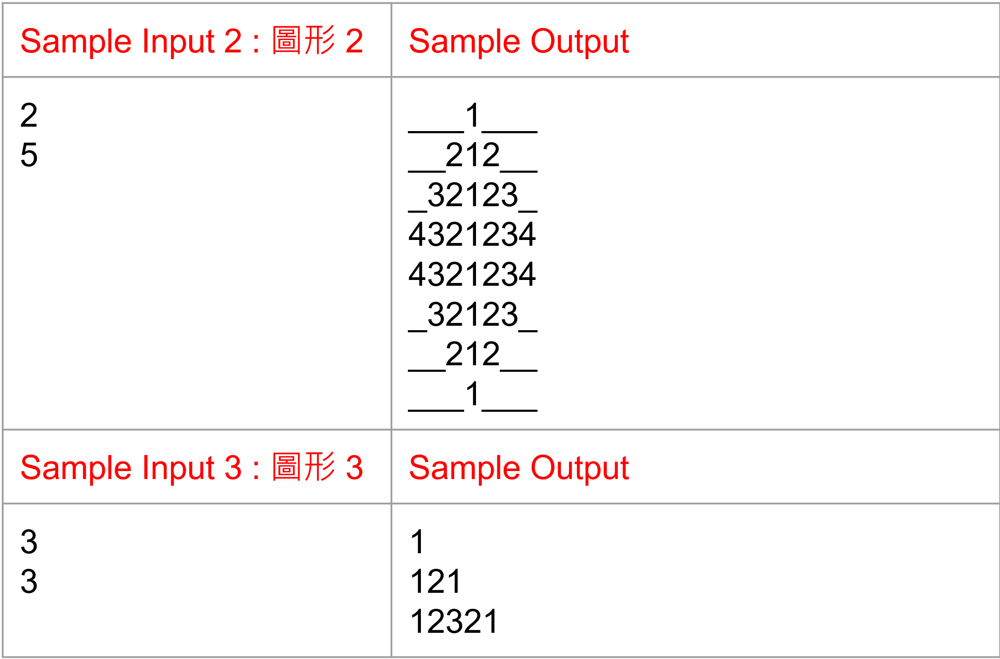
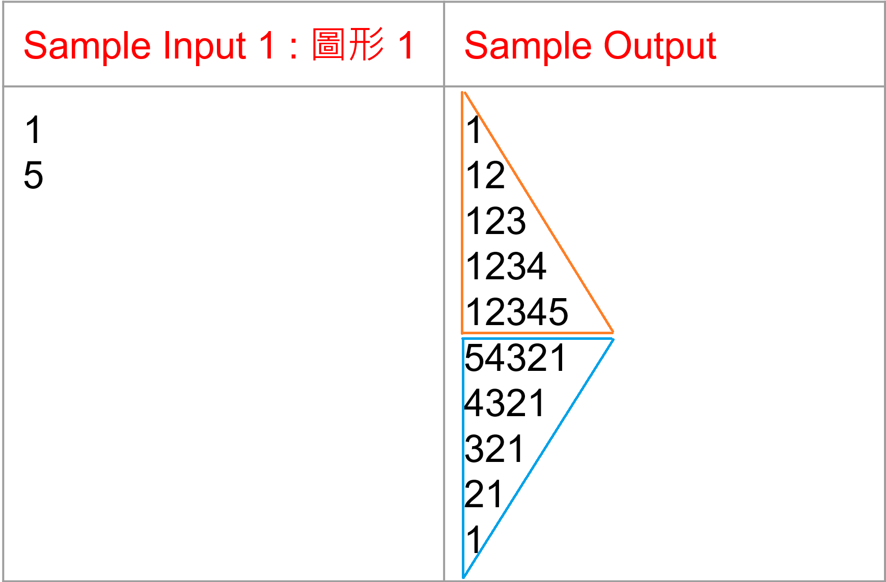

單層迴圈圖形列印 (進階題)
將 Code 寫成至少三個 function,每一個 function 至多使用一層迴圈,輸入圖案編號與參數,輸出各種圖形。
輸入 : 選擇欲輸出的圖形編號(1~3)及參數
輸出 : 輸出預期的圖形
單層迴圈圖形列印 (進階題)

單層迴圈圖形列印 (進階題)

Tips

Tips
！！！至少要使用三個 function,每一個 function 至多使用一層迴圈
#include<stdio.h>
void function1( int );
void function2( int );
void function3( int );
.
.
.
int main(void) {
// 輸入圖案編號與參數
// 根據圖案編號跳至對應的function
}
// 利用function和迴圈輸出對應的圖形
void function1( int x )
{
}
void function2( int x )
{
}
void function2( int x )
{
}
.
.
.
函式(Functions)
無回傳值函式
#include <stdio.h>
// 宣告函式
void square( int );
int main()
{
int length = 5;
square( length ); // 傳入square函式的參數是5
return 0;
}
// 定義函式
// void 不需要有回傳值
void square( int length)
{
int ans = 0;
ans = length * length;
printf("正方形面積 = %d\n", ans);
}
函式(Functions)
有回傳值函式
#include <stdio.h>
// 宣告函式
int square( int );
int main()
{
int length = 5;
int ans;
ans = square( length ); // 傳入square函式的參數是5
printf("正方形面積 = %d\n", ans);
return 0;
}
// 定義函式
// 在函式中的參數名稱不一定要和主程式的變數名稱一樣，可以自由改變
int square( int len)
{
int x = 0;
x = len * len; // 將答案存在x中
return x; //將答案傳回主程式
}